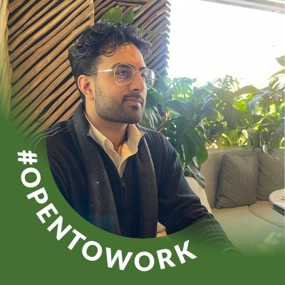

Work Experience
Research Intern - UW Data Science Major Institute
- Enhanced website functionality through advanced JavaScript and HTML techniques, prioritizing mobile device compatibility.
- Conducted Python-based sentiment analysis to assess national attitudes towards autonomous zones.
- Executed community outreach and fieldwork at Cal Anderson Park, gathering personal narratives and conducting surveys on CHOP boundaries.
Education
University of Washington - Seattle
Projects
Enterprise GIS Implementation (Azure PostgreSQL + QGIS) Nov 2023
- Established an Enterprise GIS system integrating Azure PostgreSQL server and QGIS, emphasizing centralized data management, user access control, and automated tasks through trigger functions.
- Utilized 2010 Census Tracts, Parks, Fire Stations, Hospitals, and Police stations data in King County for comprehensive spatial data analysis and visualization.
Dynamic Geospatial Mapping Web Application Nov 2023
- Developed a geospatial Mapping Web Application with a dynamic interface, leveraging data from diverse sources such as 2010 Census Tracts, Parks, Fire Stations, Hospitals, and Police stations in King County.
- Implemented functionalities for comprehensive spatial data analysis and visualization, enhancing user insights through an intuitive mapping interface.
Constructing a Search Engine (Python, CSE 163) May 2023
- Implemented a Python search engine using TF-IDF for document relevance analysis.
- Designed and programmed the Document class, emphasizing term frequency and normalization.
Additional Content
Links to most utilized job application sites
Student Image

Top List of Technical Skills
- Python
- Tableau
- Microsoft Azure
Note
Current projects do not represent entirety of technical portfolio